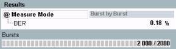

Mode Burst by Burst
In "Burst by Burst" mode, the R&S CMW transmits only bits without error protection (class II bits). The absence of guard bits enhances the BER measurement speed.
Loop mode C is used, so the internal test loop of the MS is closed before any channel decoding/encoding. The bit error rate is evaluated on a burst by burst basis.
For background information, see "Test Loops" and "Frame Structure for BER CS Tests".

BER CS results (burst by burst mode)
- BER: Bit error rate, percentage of received erroneous bits (relative to total number of received bits).
- Bursts: number of already evaluated bursts and total number of bursts to be evaluated.